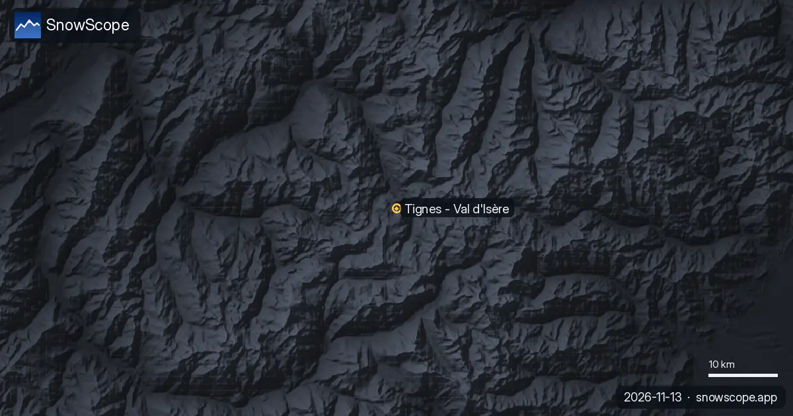

La Grave se refait une couche : 61 cm de neige fraîche en trois jours (13 novembre)
Neige fraîche à La Grave : 61 cm en 72 heures, dont 3 cm sur les dernières 24. Notre modèle de neige place maintenant environ 78 cm sur le haut du domaine. Les satellites ne se fatiguent jamais, mais ils ont des nuages.
Consultez les prévisions neige en temps réel pour La Grave sur l'application SnowScopeHauteurs de neige, alertes poudreuse et carte 3D, gratuitement.
Neige fraîche, le classement
Suivants sur la liste : Les Deux Alpes, Alpe d'Huez Grand Domaine et Champorcher, avec 51 cm, 43 cm et 38 cm en 72 heures.
76 100 km² de sol sont enneigés dans les Alpes aujourd'hui, et 829 stations sur 1 179 ont de la neige sur le haut du domaine.
| Station | Hauteur de neige | Neige fraîche, 72 h | Attendu, jours suivants | Sommet |
|---|---|---|---|---|
| La Grave | 78 cm | 61 cm | 33 cm | 3 543 m |
| Les Deux Alpes | 52 cm | 51 cm | 30 cm | 3 511 m |
| Alpe d'Huez Grand Domaine | 52 cm | 43 cm | 31 cm | 3 306 m |
| Champorcher | 25 cm | 38 cm | 3 cm | 2 489 m |
| Orcières Merlette | 35 cm | 36 cm | 35 cm | 2 731 m |
La vérité du terrain
Contrôle au sol, station Sonnblick (3 109 m) : 55 cm au sol le 13 novembre, 23 cm de neuve en 24 heures. La station de mesure Sulden Madritsch (2 825 m) ajoute une vraie mesure : 33 cm au sol le 13 novembre, 23 cm de neuve en 24 heures. Contrôle au sol, station Schnals Teufelsegg (3 035 m) : 40 cm au sol le 13 novembre, 22 cm de neuve en 24 heures.
Le modèle pour les stations de ski, les instruments pour les stations de mesure : le premier estime le haut du domaine, le second mesure un point à la date indiquée.
La prévision en bref
D'ici le 16 novembre, la prévision donne 35 cm à Orcières Merlette, 33 cm à La Grave et 42–43 cm à Alpe d'Huez Grand Domaine, avec moins de certitude à mesure qu'on s'éloigne.
Les prévisions à quelques jours peuvent changer : regardez à nouveau la carte la veille du départ.
Contrôle de la limite pluie-neige
Trois altitudes à La Grave, trois chiffres : 72 cm au sommet (3 543 m), 71 cm à mi-pente (3 369 m), 66 cm en bas (3 196 m).
L'isotherme 0 °C à La Grave monte entre 2 700 m et 3 210 m le 14 novembre et coupe la station en deux : mouillé en bas, hivernal en haut.
Rester en sécurité
Après une chute de neige, le vent forme des plaques sur les pentes abritées. En hors-piste, les premiers jours demandent le plus de prudence.
Conseils aux skieurs
- La neige fraîche change vite au soleil : elle se tasse, s'humidifie et perd sa légèreté. Le matin est le moment de la skier.
- Les images satellite le montrent chaque hiver : la neige reste le plus longtemps en altitude et au nord, et part d'abord au sud.
- Avant le hors-piste ou la randonnée, lisez le bulletin d'avalanche officiel (liens ci-dessous).
- De la neige sur la carte ne veut pas dire que la station est ouverte : vérifiez remontées et dates d'ouverture sur son site.
- Activez une alerte poudreuse dans l'app SnowScope pour savoir quand La Grave reçoit de la neige fraîche.
À propos de ces chiffres
Les hauteurs de neige des stations sont la neige la plus épaisse sur le haut du domaine, d'après le modèle de neige SnowScope (environ 1 km, calcul du 13 novembre) ; ce sont des estimations pour une zone, pas une mesure en un point. Les valeurs des stations de mesure sont mesurées à la date indiquée. Les prévisions peuvent changer. Consultez toujours le bulletin d'avalanche officiel avant le hors-piste.
Bulletins d'avalanche officiels: EAWS (Alps)
Citer ce bulletin
Pour la recherche, l'enseignement ou la presse : chiffres et graphiques réutilisables librement sous CC BY 4.0 avec cette citation.
SnowScope (2026), La Grave se refait une couche : 61 cm de neige fraîche en trois jours (13 novembre), https://snowscope.app/blog/fr/2026/11/alps-la-grave-fresh-snow-powder-alert-13-november-2026.html, consulté le 2026-11-13
SnowScope (Atlas Labs). (2026, November 13). La Grave se refait une couche : 61 cm de neige fraîche en trois jours (13 novembre). SnowScope snow reports. https://snowscope.app/blog/fr/2026/11/alps-la-grave-fresh-snow-powder-alert-13-november-2026.html
BibTeX
@misc{snowscope2026alpslagravefreshsnowpowd,
author = {{SnowScope (Atlas Labs)}},
title = {La Grave se refait une couche : 61 cm de neige fraîche en trois jours (13 novembre)},
year = {2026},
month = nov,
howpublished = {\url{https://snowscope.app/blog/fr/2026/11/alps-la-grave-fresh-snow-powder-alert-13-november-2026.html}},
note = {Published 2026-11-13 10:58 UTC; accessed 2026-11-13}
}· CC BY 4.0 · Méthodes, données et outils →
La Grave : neige et température selon l'altitude, cet hiver vs l'hiver dernier (outils) →
Suivre La Grave
Gratuit : un message quand la neige arrive, et la météo chaque matin.
Autres bulletins neige

D'ici le 10 novembre, notre prévision donne 36 cm à Orcières Merlette, 33 cm à Les Deux Alpes et 32 cm à La Grave. Les chiffres des stations de ski …

50 cm en haut du domaine : voilà pourquoi La Grave est en tête de notre liste. Nous avons combiné la hauteur de neige du jour, la neige fraîche des …

Les conditions de neige à Tignes le 13 novembre 2026 : 42 cm au sommet (3447 m), 12 cm à 2503 m, une vallée sans neige à 1559 m, et 99 cm prévus au sommet sur sept jours, avec de la pluie sous 1700 m environ. La comparaison avec 46 hivers passés.